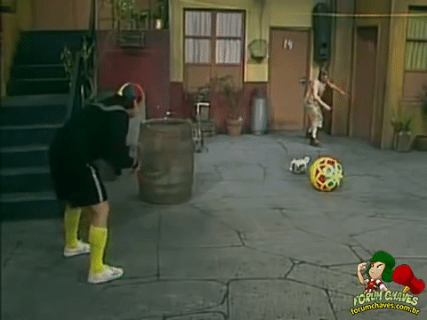
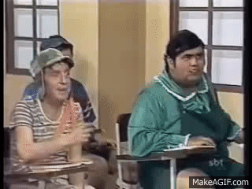

Artigo 2

Criança = pessoa até 12 anos incompletos;
Adolescente = 12 aos 18 anos.
Artigo 5
Nenhuma criança ou adolescente será objeto de qualquer forma de negligência, discriminação, exploração, violência, crueldade eo pressão, punido na forma da lei qualquer atentado, por ação ou omissão, aos seus direitos fundamentais.
Artigo 15
A criança e o adolescente têm direito à liberdade, ao respeito e à dignidade como pessoas humanas em processo de desenvolvimento e como sujeitos de direitos civis, humanos e sociais garantidos na Constituição e nas leis.
Artigo 16
O direito à liberdade compreende os seguintes aspectos:
I – ir, vir e estar nos logradouros públicos e espaços comunitários,ressalvadas as restrições legais;
II – opinião e expressão;
III – crença e culto religioso;
IV – brincar, praticar esportes e divertir-se;
V – participar da vida familiar e comunitária, sem discriminação;
VI – participar da vida política, na forma da lei;
VII – buscar refúgio, auxílio e orientação.
Artigo 17
O direito ao respeito consiste na inviolabilidade da integridade física, psíquica e moral da criança e do adolescente,abrangendo a preservação da imagem, da identidade, da autonomia, dos valores, ideias e crenças, dos espaços e objetos pessoais.
Artigo 18
É dever de todos velar pela dignidade da criança e do adolescente, pondo-os a salvo de qualquer tratamento desumano, violento, aterrorizante, vexatório ou constrangedor.
Artigo 22
Aos pais incumbe o dever de sustento, guarda e educação dos filhos menores, cabendo-lhes ainda, no interesse destes, a obrigação de cumprir e fazer cumprir as determinações judiciais. A mãe e o pai, ou os responsáveis, têm direitos iguais e deveres e responsabilidades compartilhados no cuidado e na educação da criança, devendo ser resguardado o direito de transmissão familiar de suas crenças e culturas, assegurados os direitos da criança estabelecidos nesta Lei.
Artigo 25
Entende-se por família natural acomunidade formada pelos pais ou qualquerdeles e seus descendentes. Entende-se por famíliaextensa ou ampliada aquela que se estendepara além da unidade pais e filhos ou daunidade do casal, formada por parentespróximos com os quais a criança ouadolescente convive e mantém vínculos deafinidade e afetividade.
Artigo 53
A criança e o adolescente têm direito à educação,visando ao pleno desenvolvimento de sua pessoa,preparo para o exercício da cidadania e qualificaçãopara o trabalho, assegurando-se-lhes:
I – igualdade de condições para o acesso epermanência na escola;
II – direito de ser respeitado por seus educadores;
III – direito de contestar critérios avaliativos, podendorecorrer às instâncias escolares superiores;
IV – direito de organização e participação em entidadesestudantis;V – acesso à escola pública e gratuita próxima de suaresidência. É direito dos pais ou responsáveis terciência do processo pedagógico, bem como participarda definição das propostas educacionais.
Artigo 3
A criança e o adolescente gozam de todos os direitos fundamentais inerentes à pessoa humana, sem prejuízo da proteção integral de que trata esta Lei, assegurando-se-lhes, por lei ou por outros meios, todas as oportunidades e facilidades, a fim de lhes facultar o desenvolvimento físico, mental, moral, espiritual e social, em condições de liberdade e de dignidade.